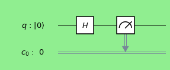
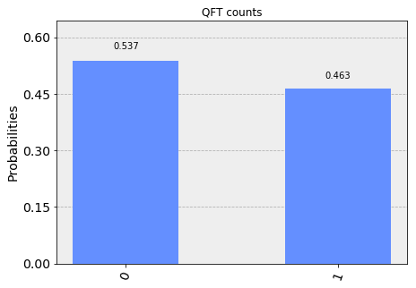
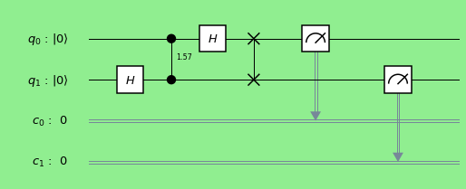
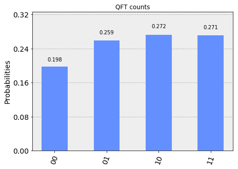
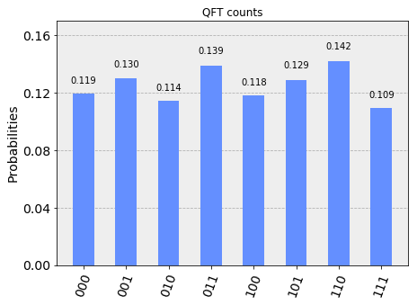

Quantum Fourier Transform
In quantum computing, the quantum Fourier transform (for short: QFT) is a linear transformation on quantum bits, and is the quantum analogue of the inverse discrete Fourier transform. The quantum Fourier transform is a part of many quantum algorithms, notably Shor's algorithm for factoring and computing the discrete logarithm, the quantum phase estimation algorithm for estimating the eigenvalues of a unitary operator, and algorithms for the hidden subgroup problem Wikipedia.

Import 'Quiskit' libraries.
%matplotlib inline # Importing standard Qiskit libraries and configuring account from qiskit import QuantumCircuit,QuantumRegister,ClassicalRegister from qiskit import execute, Aer, IBMQ from qiskit.compiler import transpile, assemble from qiskit.tools.jupyter import * from qiskit.visualization import *
Theory
QFT is defined as
$$ \large{QFT:|x> = \frac{1}{\sqrt{N}}\sum_{k=0}^{N-1} \omega_{x}^{k}|k>}$$
where \( \omega_{x}^{k}\) is \( N^{th} (N = 2^{n})\) root of unity: \( e^{\frac{2\pi i}{2^{n}}}\).
$$ QFT_{N} = \frac{1}{\sqrt{N}} \left( \begin{array}{cccccc} 1 & 1 & 1 & 1 & \cdots &1 \\ 1 & \omega_{n} & \omega_{n}^{2} & \omega_{n}^{3} & \cdots & \omega_{n} ^{N-1} \\ 1 & \omega_{n}^{2} & \omega_{n}^{4} & \omega_{n}^{6} & \cdots & \omega_{n} ^{2(N-1)} \\ 1 & \omega_{n}^{3} &\omega_{n}^{6} & \omega_{n}^{9} & \cdots & \omega_{n} ^{3(N-1)} \\ \vdots & \vdots & \vdots & \vdots & \dots & \vdots \\ 1 & \omega_{n}^{(N-1)} & \omega_{n}^{2(N-1)} & \omega_{n}^{3(N-1)} &\cdots & \omega_{n} ^{(N-1((N-1)} \\ \end{array} \right) $$
Single qubit QFT
Theory
For single qubit circuit \( (n = 1, N = 2^{1} = 2)\) and \( \omega_n = e^{\frac{2\pi i}{2^{n}}} = -1 \).
$$ QFT_{1} = \frac{1}{\sqrt{2}} \left( \begin{array}{cc} 1 & 1 \\ 1 & -1 \end{array} \right)$$
- How is state |0> transformed ?
$$QFT_1|0> = \frac{1}{\sqrt{2}} \left( \begin{array}{cc}
1 & 1 \\
1 & -1
\end{array} \right) \left( \begin{array}{c}
1 \\
0
\end{array} \right) = \frac{1}{\sqrt{2}} \left( \begin{array}{c}
1 \\
1
\end{array} \right) = \frac{1}{\sqrt{2}} (|0> + |1>)$$
- How is state |1> transformed ?
$$QFT_1|1> = \frac{1}{\sqrt{2}} \left( \begin{array}{cc}
1 & 1 \\
1 & -1
\end{array} \right) \left( \begin{array}{c}
0 \\
1
\end{array} \right) = \frac{1}{\sqrt{2}} \left( \begin{array}{c}
1 \\
-1
\end{array} \right) = \frac{1}{\sqrt{2}} (|0> - |1>)$$
- How is state \( c_1|0> + c_2|1> \) transformed?
$$QFT_1(c_1|0> + c_2|1>) = \frac{1}{\sqrt{2}} \left( \begin{array}{cc} 1 & 1 \\ 1 & -1 \end{array} \right) \left( \begin{array}{cc} c_1 \\ c_2 \end{array} \right)$$ $$ = \frac{1}{\sqrt{2}} \left( \begin{array}{cc} c_1 + c_2 \\ c_2 - c1 \end{array} \right) = \frac{1}{\sqrt{2}} ((c_1 + c_2)|0> - (c_2 - c1)|1>)$$
- How to realize the quantum circuit?
It is Hadamard gate !
Quantum Circuit - single qubit QFT
Quantum Circuit
def qft_1(): n=1 qc = QuantumCircuit() q = QuantumRegister(n, 'q') c = ClassicalRegister(n, 'c') qc.add_register(q) qc.add_register(c) qc.h(q[0]) return qc,q,c
Measurement
qc,q,c = qft_1() qc.measure(q[0], c[0]) # Change the background color in mpl style = {'backgroundcolor': 'lightgreen'} qc.draw(output='mpl', style = style)

Simulation
simulator = Aer.get_backend('qasm_simulator') result = execute(qc, simulator).result() counts = result.get_counts(qc) plot_histogram(counts, title='QFT counts')

Unitary representation
from qiskit.providers.aer import UnitarySimulator qc,q,c = qft_1() # Select the UnitarySimulator from the Aer provider simulator = Aer.get_backend('unitary_simulator') # Execute and get counts result = execute(qc, simulator).result() unitary = result.get_unitary(qc) print( unitary)
[[ 0.70710678+0.j 0.70710678+0.j] [ 0.70710678+0.j -0.70710678+0.j]]
Two qubit QFT
Theory:
For two qubit circuit, \( (n =2, N = 2^{2} = 4) \) where \( \omega_{n} = e^{\frac{2\pi i}{2^{n}}} = i\).
$$QFT_2 = \frac{1}{{2}} \left( \begin{array}{cc} 1 & 1 & 1 & 1\\ 1 & i & -1 & -i\\ 1 & -1 & 1 & -1\\ 1 & -i & -1 & i \end{array} \right)$$
- How is state |00> transformed ?
$$QFT_2|00> = \frac{1}{{2}} \left( \begin{array}{cccc} 1 & 1 & 1 & 1\\ 1 & i & -1 & -i\\ 1 & -1 & 1 & -1\\ 1 & -i & -1 & i \end{array} \right) \left( \begin{array}{c} 1 \\ 0 \\ 0 \\ 0 \\ \end{array} \right) = \frac{1}{\sqrt{2}} \left( \begin{array}{c} 1 \\ 1 \\ 1 \\ 1 \end{array} \right) = \frac{1}{{2}} (|00> + |10> + |01> + |11>)$$
- How is state \( c_1|00> + c_2|10> + c_3 |01> + c_4 |11> \) transformed?
$$QFT_2|(c_1|00> + c_2|10> + c_3 |01> + c_4 |11>) = \frac{1}{{2}} \left( \begin{array}{cccc} 1 & 1 & 1 & 1\\ 1 & i & -1 & -i\\ 1 & -1 & 1 & -1\\ 1 & -i & -1 & i \end{array} \right) \left( \begin{array}{c} c_1 \\ c_2 \\ c_3 \\ c_4 \\ \end{array} \right) $$
$$= \frac{1}{{2}} \left( \begin{array}{c} c_1 +c_2 +c_3 +c_4 \\ c_1 +ic_2 -c_3 -ic_4 \\ c_1 -c_2 +c_3 -c_4 \\ c_1 -ic_2 -c_3 +ic_4 \end{array} \right) = \frac{1}{{2}} (d_1|00> + d_2|10> + d_3|01> + d_4|11>)$$
- How to realize the quantum circuit?
$$H \otimes I = \frac{1}{\sqrt{2}} \left( \begin{array}{cc} 1 & 1 \\ 1 & -1 \end{array} \right) \otimes \left( \begin{array}{cc} 1 & 0 \\ 0 & 1 \end{array} \right) = \frac{1}{\sqrt{2}}\left( \begin{array}{cccc} 1 & 0 & 1 & 0\\ 0 & 1 & 0 & 1\\ 1 & 0 & -1 & 0 \\ 0 & 1 & 0 & -1 \end{array} \right) $$
$$C_{u1} = \left( \begin{array}{cccc} 1 & 0 & 0 & 0\\ 0 & 1 & 0 & 0\\ 0 & 0 & 1 & 0\\ 0 & 0 & 0 & i \end{array} \right)$$
$$I \otimes H = \frac{1}{\sqrt{2}} \left( \begin{array}{cc} 1 & 0 \\ 0 & 1 \end{array} \right) \otimes \left( \begin{array}{cc} 1 & 1 \\ 1 & -1 \end{array} \right) = \frac{1}{\sqrt{2}}\left( \begin{array}{cccc} 1 & 1 & 0 & 0\\ 1 & -1 & 0 & 0\\ 0 & 0 & 1 & 1 \\ 0 & 0 & 1 & -1 \end{array} \right) $$
$$ SWAP = \left( \begin{array}{cccc} 1 & 0 & 0 & 0\\ 0 & 0 & 1 & 0\\ 0 & 1 & 0 & 0\\ 0 & 0 & 0 & 1 \end{array} \right)$$
$$QFT_2 = (H \otimes I) \times C_{u1} \times (I \otimes H) \times SWAP $$
$$ = \frac{1}{\sqrt{2}}\left( \begin{array}{cccc} 1 & 0 & 1 & 0\\ 0 & 1 & 0 & 1\\ 1 & 0 & -1 & 0 \\ 0 & 1 & 0 & -1 \end{array} \right)\left( \begin{array}{cccc} 1 & 0 & 0 & 0\\ 0 & 1 & 0 & 0\\ 0 & 0 & 1 & 0\\ 0 & 0 & 0 & i \end{array} \right)\frac{1}{\sqrt{2}}\left( \begin{array}{cccc} 1 & 1 & 0 & 0\\ 1 & -1 & 0 & 0\\ 0 & 0 & 1 & 1 \\ 0 & 0 & 1 & -1 \end{array} \right) \left( \begin{array}{cccc} 1 & 0 & 0 & 0\\ 0 & 0 & 1 & 0\\ 0 & 1 & 0 & 0\\ 0 & 0 & 0 & 1 \end{array} \right)$$
$$ = \frac{1}{{2}} \left( \begin{array}{cccc} 1 & 1 & 1 & 1\\ 1 & i & -1 & -i\\ 1 & -1 & 1 & -1\\ 1 & -i & -1 & i \end{array} \right)$$
- Numpy check:
HI = np.array([[1,0,1,0],[0,1,0,1],[1,0,-1,0],[0,1,0,-1]]) CU1 = np.array([[1,0,0,0],[0,1,0,0],[0,0,1,0],[0,0,0,0.+1.j]]) IH = np.array([[1,1,0,0],[1,-1,0,0],[0,0,1,1],[0,0,1,-1]]) SWAP = np.array([[1,0,0,0],[0,0,1,0],[0,1,0,0],[0,0,0,1]])
np.dot(HI,np.dot(CU1,np.dot(IH,SWAP)))
array([[ 1.+0.j, 1.+0.j, 1.+0.j, 1.+0.j],
[ 1.+0.j, 0.+1.j, -1.+0.j, 0.-1.j],
[ 1.+0.j, -1.+0.j, 1.+0.j, -1.+0.j],
[ 1.+0.j, 0.-1.j, -1.+0.j, 0.+1.j]])
Quantum Circuit - two qubit QFT
import numpy as np
Quantum circuit
def qft_2(): n=2 qc = QuantumCircuit() q = QuantumRegister(n, 'q') c = ClassicalRegister(n, 'c') qc.add_register(q) qc.add_register(c) qc.h(q[1]) qc.cu1(np.pi / 2, q[0], q[1]) qc.h(q[0]) qc.swap(q[0], q[1]) return qc,q,c
Measurement
qc,q,c = qft_2() qc.measure(q, c) # Change the background color in mpl style = {'backgroundcolor': 'lightgreen'} qc.draw(output='mpl', style = style)

Manual approach:
- Initial state: |00>
- After Hadamard Gate on qubit 2 : \(\frac{1}{\sqrt{2}}|00> + \frac{1}{\sqrt{2}}|01> \)
- After phase shift Gate : \(\frac{1}{\sqrt{2}}|00> + \frac{1}{\sqrt{2}}|01> \)
- After Hadamard Gate on qubit 1 : \(\frac{1}{{2}}|00> + \frac{1}{{2}}|10> + \frac{1}{{2}}|01> - \frac{1}{{2}}|11>\)
- After SWAP: \( \frac{1}{{2}}|00> + \frac{1}{{2}}|01> + \frac{1}{{2}}|10> - \frac{1}{{2}}|11>\)
Simulation
simulator = Aer.get_backend('qasm_simulator') result = execute(qc, simulator).result() counts = result.get_counts(qc) plot_histogram(counts, title='QFT counts')

Unitary representation
from qiskit.providers.aer import UnitarySimulator qc,q,c = qft_2() # Select the UnitarySimulator from the Aer provider simulator = Aer.get_backend('unitary_simulator') # Execute and get counts result = execute(qc, simulator).result() unitary = result.get_unitary(qc) print( unitary)
[[ 0.5+0.j 0.5+0.j 0.5+0.j 0.5+0.j ] [ 0.5+0.j 0. +0.5j -0.5+0.j 0. -0.5j] [ 0.5+0.j -0.5+0.j 0.5+0.j -0.5+0.j ] [ 0.5+0.j 0. -0.5j -0.5+0.j 0. +0.5j]]
Quantum Circuit - three qubit QFT
Quantum circuit
def qft_3(): n = 3 qc = QuantumCircuit() q = QuantumRegister(n, 'q') c = ClassicalRegister(n, 'c') qc.add_register(q) qc.add_register(c) qc.h(q[2]) qc.cu1(np.pi / 2, q[1], q[2]) qc.h(q[1]) qc.cu1(np.pi / 4, q[0], q[2]) qc.cu1(np.pi / 2, q[0], q[1]) qc.h(q[0]) qc.swap(q[0], q[2]) return qc,q,c
Measuremrnt
qc,q,c = qft_3() qc.measure(q,c) # Change the background color in mpl style = {'backgroundcolor': 'lightgreen'} qc.draw(output='mpl', style = style)

Manual Approach:
- Initial state: |000>
- After Hadamard Gate on 3rd qubit : \(\frac{1}{\sqrt{2}}(|000> + |001>) \)
- After CU1 gate on qubit (2,3) : \(\frac{1}{\sqrt{2}}(|000> + |001>) \)
- After CU1 gate on qubit (1,3) : \(\frac{1}{\sqrt{2}}(|000> + |001>) \)
- After Hadamard Gate on qubit 2 : \(\frac{1}{{2}}(|000> + |010> + |001> -|011> )\)
- After CU1 gate on qubit (0,1): \(\frac{1}{{2}}(|000> + |010> + |001> -|011> )\)
- After Hadamard Gate on qubit 3 : \(\frac{1}{2\sqrt{2}}(|000> + |001> + |010> + |011> + |000> - |001> - |010> + |011)\)
Simulation
simulator = Aer.get_backend('qasm_simulator') result = execute(qc, simulator).result() counts = result.get_counts(qc) plot_histogram(counts, title='QFT counts')

Unitary representation
from qiskit.providers.aer import UnitarySimulator qc,q,c = qft_3() # Select the UnitarySimulator from the Aer provider simulator = Aer.get_backend('unitary_simulator') # Execute and get counts result = execute(qc, simulator).result() unitary = result.get_unitary(qc) print( unitary)
[[ 0.35355339+0.j 0.35355339+0.j 0.35355339+0.j 0.35355339+0.j 0.35355339+0.j 0.35355339+0.j 0.35355339+0.j 0.35355339+0.j ] [ 0.35355339+0.j 0.25 +0.25j 0. +0.35355339j -0.25 +0.25j -0.35355339+0.j -0.25 -0.25j 0. -0.35355339j 0.25 -0.25j ] [ 0.35355339+0.j 0. +0.35355339j -0.35355339+0.j 0. -0.35355339j 0.35355339+0.j 0. +0.35355339j -0.35355339+0.j 0. -0.35355339j] [ 0.35355339+0.j -0.25 +0.25j 0. -0.35355339j 0.25 +0.25j -0.35355339+0.j 0.25 -0.25j 0. +0.35355339j -0.25 -0.25j ] [ 0.35355339+0.j -0.35355339+0.j 0.35355339+0.j -0.35355339+0.j 0.35355339+0.j -0.35355339+0.j 0.35355339+0.j -0.35355339+0.j ] [ 0.35355339+0.j -0.25 -0.25j 0. +0.35355339j 0.25 -0.25j -0.35355339+0.j 0.25 +0.25j 0. -0.35355339j -0.25 +0.25j ] [ 0.35355339+0.j 0. -0.35355339j -0.35355339+0.j 0. +0.35355339j 0.35355339+0.j 0. -0.35355339j -0.35355339+0.j 0. +0.35355339j] [ 0.35355339+0.j 0.25 -0.25j 0. -0.35355339j -0.25 -0.25j -0.35355339+0.j -0.25 +0.25j 0. +0.35355339j 0.25 +0.25j ]]
Quantum Circuit - four qubit QFT
Quantum circuit
def qft_4(): n = 4 qc = QuantumCircuit() q = QuantumRegister(n, 'q') c = ClassicalRegister(n, 'c') qc.add_register(q) qc.add_register(c) qc.h(q[3]) qc.cu1(np.pi / 2, q[2], q[3]) qc.h(q[2]) qc.cu1(np.pi / 4, q[1], q[3]) qc.cu1(np.pi / 2, q[1], q[2]) qc.h(q[1]) qc.cu1(np.pi / 8, q[0], q[3]) qc.cu1(np.pi / 4, q[0], q[2]) qc.cu1(np.pi / 2, q[0], q[1]) qc.h(q[0]) qc.swap(q[0], q[3]) qc.swap(q[1], q[2]) return qc,q,c
Measurement
qc,q,c = qft_4() qc.measure(q,c) # Change the background color in mpl style = {'backgroundcolor': 'lightgreen'} qc.draw(output='mpl', style = style)

Simulation
simulator = Aer.get_backend('qasm_simulator') result = execute(qc, simulator).result() counts = result.get_counts(qc) plot_histogram(counts, title='QFT counts')

Unitary representation
qc = qft_circuit(4) # Select the UnitarySimulator from the Aer provider simulator = Aer.get_backend('unitary_simulator') # Execute and get counts result = execute(qc, simulator).result() unitary = result.get_unitary(qc) print( unitary)
[[ 0.25 +0.j 0.25 +0.j 0.25 +0.j 0.25 +0.j 0.25 +0.j 0.25 +0.j 0.25 +0.j 0.25 +0.j 0.25 +0.j 0.25 +0.j 0.25 +0.j 0.25 +0.j 0.25 +0.j 0.25 +0.j 0.25 +0.j 0.25 +0.j ] [ 0.25 +0.j 0.23096988+0.09567086j 0.1767767 +0.1767767j 0.09567086+0.23096988j 0. +0.25j -0.09567086+0.23096988j -0.1767767 +0.1767767j -0.23096988+0.09567086j -0.25 +0.j -0.23096988-0.09567086j -0.1767767 -0.1767767j -0.09567086-0.23096988j 0. -0.25j 0.09567086-0.23096988j 0.1767767 -0.1767767j 0.23096988-0.09567086j] [ 0.25 +0.j 0.1767767 +0.1767767j 0. +0.25j -0.1767767 +0.1767767j -0.25 +0.j -0.1767767 -0.1767767j 0. -0.25j 0.1767767 -0.1767767j 0.25 +0.j 0.1767767 +0.1767767j 0. +0.25j -0.1767767 +0.1767767j -0.25 +0.j -0.1767767 -0.1767767j 0. -0.25j 0.1767767 -0.1767767j ] [ 0.25 +0.j 0.09567086+0.23096988j -0.1767767 +0.1767767j -0.23096988-0.09567086j 0. -0.25j 0.23096988-0.09567086j 0.1767767 +0.1767767j -0.09567086+0.23096988j -0.25 +0.j -0.09567086-0.23096988j 0.1767767 -0.1767767j 0.23096988+0.09567086j 0. +0.25j -0.23096988+0.09567086j -0.1767767 -0.1767767j 0.09567086-0.23096988j] [ 0.25 +0.j 0. +0.25j -0.25 +0.j 0. -0.25j 0.25 +0.j 0. +0.25j -0.25 +0.j 0. -0.25j 0.25 +0.j 0. +0.25j -0.25 +0.j 0. -0.25j 0.25 +0.j 0. +0.25j -0.25 +0.j 0. -0.25j ] [ 0.25 +0.j -0.09567086+0.23096988j -0.1767767 -0.1767767j 0.23096988-0.09567086j 0. +0.25j -0.23096988-0.09567086j 0.1767767 -0.1767767j 0.09567086+0.23096988j -0.25 +0.j 0.09567086-0.23096988j 0.1767767 +0.1767767j -0.23096988+0.09567086j 0. -0.25j 0.23096988+0.09567086j -0.1767767 +0.1767767j -0.09567086-0.23096988j] [ 0.25 +0.j -0.1767767 +0.1767767j 0. -0.25j 0.1767767 +0.1767767j -0.25 +0.j 0.1767767 -0.1767767j 0. +0.25j -0.1767767 -0.1767767j 0.25 +0.j -0.1767767 +0.1767767j 0. -0.25j 0.1767767 +0.1767767j -0.25 +0.j 0.1767767 -0.1767767j 0. +0.25j -0.1767767 -0.1767767j ] [ 0.25 +0.j -0.23096988+0.09567086j 0.1767767 -0.1767767j -0.09567086+0.23096988j 0. -0.25j 0.09567086+0.23096988j -0.1767767 -0.1767767j 0.23096988+0.09567086j -0.25 +0.j 0.23096988-0.09567086j -0.1767767 +0.1767767j 0.09567086-0.23096988j 0. +0.25j -0.09567086-0.23096988j 0.1767767 +0.1767767j -0.23096988-0.09567086j] [ 0.25 +0.j -0.25 +0.j 0.25 +0.j -0.25 +0.j 0.25 +0.j -0.25 +0.j 0.25 +0.j -0.25 +0.j 0.25 +0.j -0.25 +0.j 0.25 +0.j -0.25 +0.j 0.25 +0.j -0.25 +0.j 0.25 +0.j -0.25 +0.j ] [ 0.25 +0.j -0.23096988-0.09567086j 0.1767767 +0.1767767j -0.09567086-0.23096988j 0. +0.25j 0.09567086-0.23096988j -0.1767767 +0.1767767j 0.23096988-0.09567086j -0.25 +0.j 0.23096988+0.09567086j -0.1767767 -0.1767767j 0.09567086+0.23096988j 0. -0.25j -0.09567086+0.23096988j 0.1767767 -0.1767767j -0.23096988+0.09567086j] [ 0.25 +0.j -0.1767767 -0.1767767j 0. +0.25j 0.1767767 -0.1767767j -0.25 +0.j 0.1767767 +0.1767767j 0. -0.25j -0.1767767 +0.1767767j 0.25 +0.j -0.1767767 -0.1767767j 0. +0.25j 0.1767767 -0.1767767j -0.25 +0.j 0.1767767 +0.1767767j 0. -0.25j -0.1767767 +0.1767767j ] [ 0.25 +0.j -0.09567086-0.23096988j -0.1767767 +0.1767767j 0.23096988+0.09567086j 0. -0.25j -0.23096988+0.09567086j 0.1767767 +0.1767767j 0.09567086-0.23096988j -0.25 +0.j 0.09567086+0.23096988j 0.1767767 -0.1767767j -0.23096988-0.09567086j 0. +0.25j 0.23096988-0.09567086j -0.1767767 -0.1767767j -0.09567086+0.23096988j] [ 0.25 +0.j 0. -0.25j -0.25 +0.j 0. +0.25j 0.25 +0.j 0. -0.25j -0.25 +0.j 0. +0.25j 0.25 +0.j 0. -0.25j -0.25 +0.j 0. +0.25j 0.25 +0.j 0. -0.25j -0.25 +0.j 0. +0.25j ] [ 0.25 +0.j 0.09567086-0.23096988j -0.1767767 -0.1767767j -0.23096988+0.09567086j 0. +0.25j 0.23096988+0.09567086j 0.1767767 -0.1767767j -0.09567086-0.23096988j -0.25 +0.j -0.09567086+0.23096988j 0.1767767 +0.1767767j 0.23096988-0.09567086j 0. -0.25j -0.23096988-0.09567086j -0.1767767 +0.1767767j 0.09567086+0.23096988j] [ 0.25 +0.j 0.1767767 -0.1767767j 0. -0.25j -0.1767767 -0.1767767j -0.25 +0.j -0.1767767 +0.1767767j 0. +0.25j 0.1767767 +0.1767767j 0.25 +0.j 0.1767767 -0.1767767j 0. -0.25j -0.1767767 -0.1767767j -0.25 +0.j -0.1767767 +0.1767767j 0. +0.25j 0.1767767 +0.1767767j ] [ 0.25 +0.j 0.23096988-0.09567086j 0.1767767 -0.1767767j 0.09567086-0.23096988j 0. -0.25j -0.09567086-0.23096988j -0.1767767 -0.1767767j -0.23096988-0.09567086j -0.25 +0.j -0.23096988+0.09567086j -0.1767767 +0.1767767j -0.09567086+0.23096988j 0. +0.25j 0.09567086+0.23096988j 0.1767767 +0.1767767j 0.23096988+0.09567086j]]
References
- https://www.youtube.com/watch?v=bntew-yoMzk